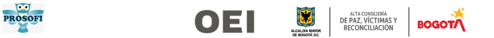

"Aromas de Paz"

En el marco de ejecución del convenio de cooperación internacional entre la Alta Consejería para la Paz, Víctimas y Reconciliación de la Secretaría General de la Alcaldía Mayor de Bogotá y la Organización de Estados Iberoamericanos para la educación, la ciencia y la cultura -OEI, resultó como ganadora la iniciativa "AROMAS DE PAZ" de Las + Vagabundas.
Este premio posibilitó circular un laboratorio itinerante creativo [arte, ciencia y tecnología] en La Flora - Usme localidad Quinta de Bogotá Colombia.
Un conjunto de estrategias y acciones que tejieron territorio desde el reconocimiento de otras, otros, otres. Una construcción de reconciliación social, hizo parte de la experiencia del laboratorio.
Una síntesis dejamos aquí, un intento por transmitir nuestra experiencia en este recorrido comunitario. Siembra, propagación, usos y transformación de las plantas aromáticas, excusas maravillosas para continuar construyendo, habitando e hilando territorios.
Encuentro de saberes y caracterización de plantas medicinales
La enredadera es una planta especializada en trepar los rincones más austeros de las ciudades, invadiendo los espacios grises con un verde brillante.
Las + Vagabundas nacemos con el principio de aferrarnos a la sociedad agrietada en la que vivimos y con ello nos encontramos en el camino con más plantas, comunidades e historias.
En una de esas coincidencias del recorrido nos hallamos con Proso - Programa social de la Facultad de Ingeniería de la Pontificia Universidad Javeriana. Un espacio de proyección universitaria hacia la sociedad, que contribuye al desarrollo y empoderamiento de comunidades en condición de vulnerabilidad socioeconómica, desde el ejercicio del ser y naturaleza universitaria con enfoque participativo e interdisciplinario.
En articulación con esta y la red que acompaña de huerteras y huerteros "Cultivando Saberes" de 2023 y llevamos hasta marzo del mismo año.
Infinitas gracias a todes por esta experiencia, por este encuentro y apoyo para este hipertexto Porque sin ustedes no se habría sido posible.
Memoria Social
Hablamos de memoria asociandolo al arraigo, a la posibilidad de relacionarse, de construir conexión entre la experiencia a través del tiempo; siendo pues, un conglomerado de afectividades, sensaciones olores, formas, colores, texturas, sonidos y sabores que se establecen donde se reconocen vínculos, historias, legados y elementos materiales que generan un sentido de pertenencia, por el espacio o territorio donde se encuentran las personas.
Las + VagabundasEn Usme, la localidad Quinta, surgen acciones que buscan la soberanía alimentaria. El rescate de saberes frente al cultivar de manera limpia y responsable con el medio ambiente. Apoyando este proceso surge AROMAS DE PAZ que tiene como finalidad generar el grato recuerdo de los olores que nos produce tranquilidad, no solo física, también mental. La anterior afirmación enfocada hacia los conocimientos y saberes que tiene este grupo de huerteras y huerteros frente a las plantas aromáticas y medicinales, sus usos y maneras de transformarlas para retomarlas en la cotidianidad.
Nos juntamos con la red de huerteras-huerteros "Sabores y Saberes" de los barrios de Usme, para hablar sobre hierbas o plantas aromáticas y recordar que el uso de ellas en el hogar y la comunidad ha formado parte de nuestra historia y costumbres, ya que han sido utilizadas como remedio para combatir todo tipo de enfermedades, dolencias o afección, en algunos casos las hemos usado de manera preventiva o curativa.
La experiencia de juntarnos en la producción de alimentos y saberes enfatiza el cultivo de relaciones sociales, dinámicas de encuentro y restablecimiento de confianza entre vecinas y vecinos.
Algunas de estas fueron las preguntas que nos rondaron en este proceso y que intentamos dejar para la reflexión del grupo.